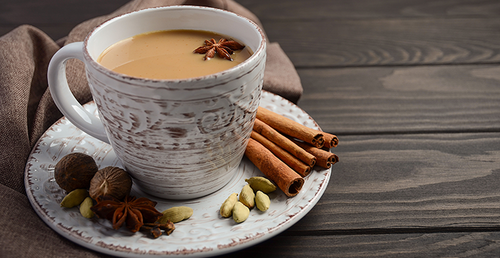

Незважаючи на велику різноманітність рецептів масала чаю, все ж можна згадати ті основні складові цього напою, які відрізняють його від всіх інших способів приготування чаю. Масала чай обов'язково містить такі інгредієнти:
чорний чай (зазвичай недорогий, міцний і з сильним смаком) прянощі;
молоко;
цукор.
З сортів чаю перевага віддається сорту ассам, частіше гранульованому, а іноді крупнолистового. Також підходить цейлонський крупнолистовий чай. Залежно від того, який фортеці напій ви хочете отримати, чай або доводять до кипіння і кип'ятять на повільно вогні, або додають в киплячу воду і залишають настоятися.
Вид молока, його жирність і пропорції співвідношення його з водою коливаються в залежності того, наскільки густий і молочний повинен бути напій. Пропорції співвідношення кількості молока до води в масала чай можуть бути від 1: 4 до 2: 5. Часто молоко додають в готовий чай. Іноді молоко з водою змішують перед приготуванням і вже там варять спеції і заварюють чай.
Молоко добре розкриває смаки і аромати спецій. Іноді прянощі рекомендують не просто всипати в гарячу молочно -водяну суміш, а довести до кипіння і поварити на повільному вогні.
Тепер звернемося до складу суміші спецій. Саме вона визначає смак напою. Зазвичай для масала чаю беруть гвоздику, кардамон, корицю, свіжий і мелений імбир і перець (може бути чорний, червоний або білий). Іноді в зовсім невеликих дозуваннях додають шафран, аніс, мускатний горіх, аджван, зіру, коріандр і фенхель. Для більш насиченого і яскраво го аромату і смаку напою краще не використовувати готові мелені спеції, а змолоти свіжі прямо перед приготуванням.
